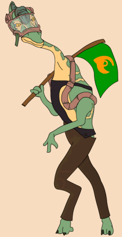

| Classification | Phuii |
| Gender | Male |
| Height | 4'8'' |
| Home World | Phu |
| Podracer | Collor Pondrat Plug-2 Behemoth |
Formerly a minor league racer, Mars Guo worked his way up to the Boonta Eve Classic. The night before, Mars attended Boles Roor's glimmik concert where he had too much to drink. He began to hit on Sebulba's masseuse Ann Gella, offering to take her away if he won the race. Teemto Pagalies overheard him and later told Sebulba, as he was in love with Ann Gella. During the second lap of the podrace, Sebulba tossed a tool into Mars' pod. It crashed to the ground and tore to pieces. Mars' cockpit flew backwards and dislodged one of the cables on Anakin Skywalker's pod. Mars Guo survived, rebuilt his pod, and continued to race for years to come.